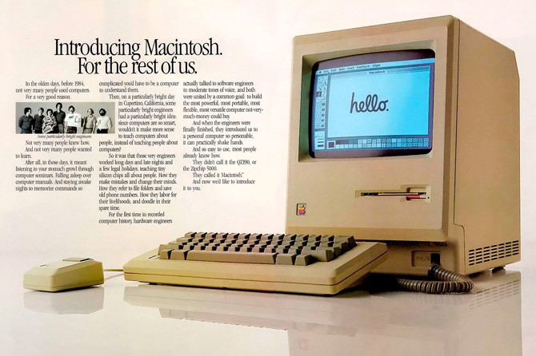

Página última vez actualizada: 21-8-21
Página última vez actualizada: 21-8-21
Los arranques de Apple fueron humildes, ya que no disponían de mucha inversión económica. Ante la falta de recursos, el propio Steve Jobs tuvo que vender su furgoneta Volkswagen y Steve Wozniak una calculadora HP-65
Ron Wayne, sin embargo, decidió abandonar la compañía sólo dos semanas después de su creación, presionado por el miedo a perder su inversión inicial de 800 euros
A pesar de los pocos días que formo parte del proyecto, le dio tiempo a diseñar el primer logo de la empresa, que consistía en un dibujo hecho a pluma con tinta china que representaba a Isaac Newton apoyado en un manzano. Un año después este logotipo fue sustituido por la ya mítica manzana mordida, que a diferencia de hoy en día, contaba con franjas de colores
Los dos emprendedores que quedaron dirigiendo la empresa, Steve Jobs y Steve Wozniak, complementaban sus respectivos talentos a la perfección. Wozniak era un genio de la ingeniería y Jobs un visionario en el mundo de los negocios, pieza clave en el fulgurante éxito de Apple porque, en palabras de su socio: "No basta con crear, hay que saber vender"
El primer producto que lanzaron al mercado fue el Apple I. Su idea era crear un ordenador personal que resultara cómodo y asequible
Fue diseñado por Steve Wozniak y se trataba básicamente de un prototipo. Se vendieron solamente 175 unidades y el precio era de 666,66 dólares
Sólo un año después salió a la venta el Apple II, que contaba con muchas mejoras respecto a su antecesor, como la capacidad para reproducir gráficos a color. Equipada con VisiCalc, una especie de hoja de cálculo, pretendía convertirlo en una computadora que resultara útil para los negocios
La verdadera revolución de Apple llegó en el año 1984, con el lanzamiento del Macintosh, diseñado por Jeff Raskin
Una de las principales novedades del Macintosh fue la incorporación del ratón, así como la posibilidad de usar la autoedición, que permitía diseñar un documento antes de convertirlo en papel
la empresa había desarrollado el Apple Lisa, el primer ordenador con GUI (interfaz gráfica de usuario), y el primer ratón después de Xerox Star.
Lisa era el primer sistema informático en incorporar a los ordenadores una pantalla con mapas de bits, una interfaz basada en ventanas, ratón, iconos, carpetas, una red Ethernet, servidores de archivos e impresoras y e-mail
Un proyecto iniciado en 1977, por uno de los empleado de Apple, Jef Raskinn, cuyo primer ordenador, el Macintosh 128, aparece en enero de 1984 a un precio de 2.495 dólares, dispuesto a cubrir los errores anteriores.
Carece de disco duro, pero posee un disco flexible de 400 kb, capaz de contener el sistema operativo. Y se puede comprar otro disco flexible para almacenar la información de la misma capacidad. La pantalla monocromo tiene 9 pulgadas y una resolución de 512 x 324 píxeles
En 1987, aparece el Macintosh SE con una memoria RAM de 512 Kb y un software que incluye MacPaint y MacWrite
También en 1987, aparece el Macintosh II, el primer ordenador Mac con memoria expandible y slots de expansión
En los últimos tiempos, Apple ha desarrollado otros productos asociados a los ordenadores que le han dado muchos más beneficios, por ejemplo, la serie iPod de música y fotos, y el proyectado iPhone que se comercializa en EE.UU
Uno de los enfoques más interesante se sitúa en los sensores LIDAR (Light Detection and Ranging), que básicamente son los encargados de medir las distancias entre el sensor y el resto de superficies mediante láseres. De este modo es posible crear mapas 3D de alta resolución y bases de datos con los entornos por los que pasan los vehículos
Apple es una de las empresas con mayor número de coches autónomos en prueba en algunas zonas de Estados Unidos